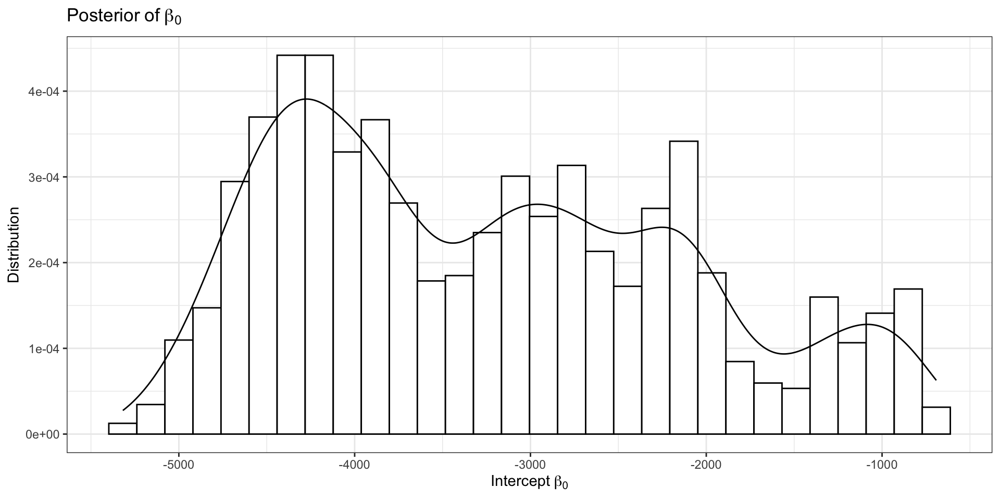
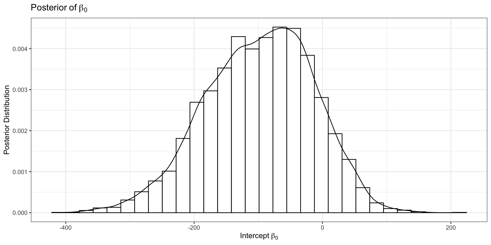
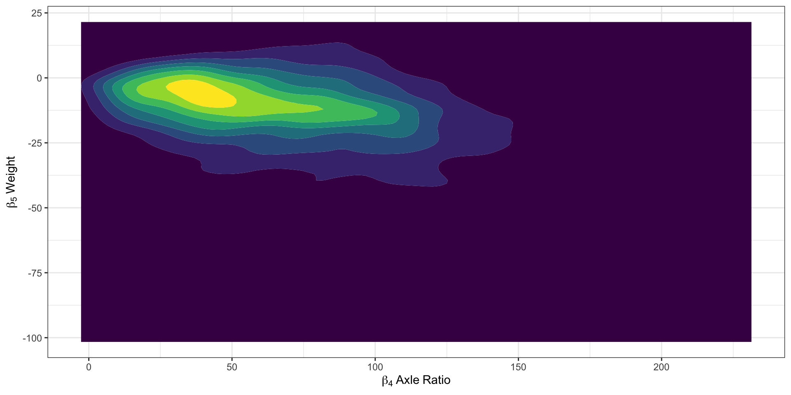

functions {
// ... function declarations and definitions ...
}
data {
// ... declarations ...
}
transformed data {
// ... declarations ... statements ...
}
parameters {
// ... declarations ...
}
transformed parameters {
// ... declarations ... statements ...
}
model {
// ... declarations ... statements ...
}
generated quantities {
// ... declarations ... statements ...
}STAN Introduction
Joseph Sartini
2025-01-31
What is STAN?
Bayesian probabilistic programming language
Multiple posterior sampling routines
Hamiltonian Monte Carlo
Variational Inference
Laplace approximation
Based on C++
Interfaces with Python, Julia, R, and Unix Shell
Structure of a STAN Script
Section - functions
Complex indexing
- Sparsely observed data
Generating quantities/structures
- Splines, etc.
Suffixes for particular functions
Containing RNG: “_rng”
Modifying target density: “_lp”
Section - data
Likelihood data
- Indexing arrays
All constants
- Array extents
Commonly used linear transforms
Section - transformed data
Functions of data variables
Only evaluated once
- Prior to sampling
Helpful for book-keeping
- Simplify data inputs
Random data sub-samples
Section - parameters
Specify sampled quantities
Variable names
Extents
Definitions only, no statements
Read from underlying sampler
Can provide initial values
Section - transformed parameters
Deterministic functions
Part of target posterior
Evaluated with each sample
Inverse transform
Log absolute Jacobian
Good for re-parameterization
Stability
Latent modeling
Section - model
Define the target posterior
- Sum of log density functions
Prior distributions on (transformed) parameters
Data/model likelihood
Most computational expense
ORDER MATTERS
Section - generated quantities
Executed after samples are generated
Functions of model output
Predictions for new data
Simulate new data
Extract posterior estimates
Calculate model fit criterion
Example Model - GLM
Running the Model in R
fit_df = mtcars %>%
mutate(Efficient = case_when(mpg >= median(mpg) ~ 1,
TRUE ~ 0)) %>%
mutate(am = as.factor(am))
fit_matrix = model.matrix(~cyl + disp + hp + drat + wt + am, fit_df)
data_list = list(N = nrow(mtcars), P = ncol(fit_matrix),
Y = fit_df$Efficient, X = fit_matrix)
model = sampling(
first_model,
data = data_list,
chains = 4,
iter = 1000,
warmup = 500,
# init = ,
# control = list(adapt_delta = ,
# max_treedepth = ,
# stepsize_jitter = ),
verbose = F,
refresh = 0
)Convergence Monitoring
Divergences:0 of 2000 iterations ended with a divergence.
Tree depth:1212 of 2000 iterations saturated the maximum tree depth of 10 (60.6%).
Try increasing 'max_treedepth' to avoid saturation.
Energy:E-BFMI indicated no pathological behavior.Hamiltonian Monte Carlo

HMC Visualization: By Justinkunimune - github.com/jkunimune/hamiltonian-mc, CC0
Hamiltonian Monte Carlo Continued
Version of Metropolis-Hastings
Hamiltonian Dynamics used to propose next state
Trajectory with momentum
Distribution \(\approx\) potential energy field
Leapfrog integrator stepwise approximation
Momentum: reduced correlation between samples
Energy conservation: high acceptance probability
Divergences
Simulated trajectory \(\neq\) true trajectory
Global step size \(>\) true posterior geometry resolution
- Leapfrog first order approximataion
Hamiltonian departs from initial value
Total energy (kinetic + potential)
Should be preserved along trajectory
Sampler WILL NOT accept samples after divergence
Tree Depth Warnings
Tree depth controls number of simulation steps
- \(\leq 2^{max\_treedepth}\) steps
Primarily an efficiency concern
Generally recommended to not increase
- Often model misspecification
Est. Bayesian Fraction of Miss. Info.
Posterior decomposes into energy equivalence classes
Low EBFMI indicates getting “stuck” in energy sets
- STAN monitors energy during sampling
Insufficiently exploring the posterior
- Tails too large, etc
Geometric Intuition
Return to our Example: Model Outputs
Model Outputs (2)
ShinySTAN Debugging
ShinySTAN - NUTS Summary
ShinySTAN - Divergences
ShinySTAN - Treedepth
ShinySTAN - Energy
ShinySTAN - Autocorrelation

How to Update the Model
data {
int N; // Number of observations
int P; // Number of fixed effect covariates
array[N] int<lower=0, upper=1> Y; // Binary outcomes
matrix[N, P] X; // Fixed effects design matrix
}
transformed data {
matrix[N, P] Q_coef = qr_thin_Q(X) * sqrt(N-1);
matrix[P, P] R_coef = qr_thin_R(X) / sqrt(N-1);
matrix[P, P] R_coef_inv = inverse(R_coef);
}
parameters {
vector[P] theta; // Coefficients
}
model {
theta ~ normal(0, 100);
Y ~ bernoulli_logit(Q_coef * theta);
}
generated quantities {
vector[P] beta = R_coef_inv * theta;
}Running the Updated Model
Updated Model Performance
Divergences:0 of 6000 iterations ended with a divergence.
Tree depth:0 of 6000 iterations saturated the maximum tree depth of 10.
Energy:E-BFMI indicated no pathological behavior.Updated Model Visualization

Updated Geometry
Profiling the Model with CmdStanR (1)
data {
int N; // Number of observations
int P; // Number of fixed effect covariates
array[N] int<lower=0, upper=1> Y; // Binary outcomes
matrix[N, P] X; // Fixed effects design matrix
}
transformed data {
matrix[N, P] Q_coef = qr_thin_Q(X) * sqrt(N-1);
matrix[P, P] R_coef = qr_thin_R(X) / sqrt(N-1);
matrix[P, P] R_coef_inv = inverse(R_coef);
}
parameters {
vector[P] theta; // Coefficients
}
model {
profile("Priors") {
target += normal_lpdf(theta| 0, 100);
}
profile("Likelihood") {
target += bernoulli_logit_lpmf(Y| Q_coef * theta);
}
}
generated quantities {
profile("Generated") {
vector[P] beta = R_coef_inv * theta;
}
}Profiling the Model with CmdStanR (2)
name total_time forward_time reverse_time autodiff_calls
1 Generated 0.000175152 0.000175152 0.00000000 0
2 Likelihood 0.145845000 0.116126000 0.02971880 170759
3 Priors 0.026700700 0.023262300 0.00343839 170759